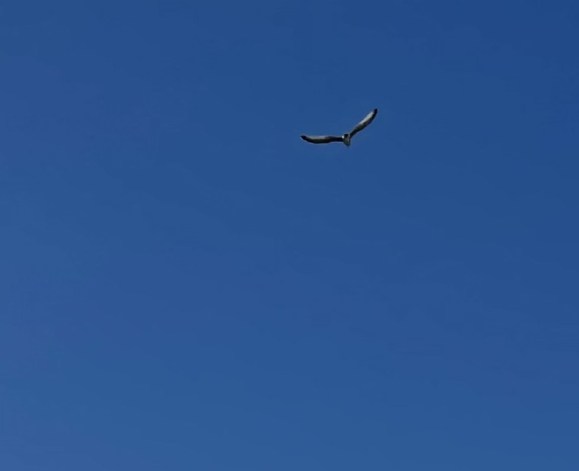

Pourquoi ce site?
De nombreuses espèces animales et végétales ainsi que de nombreux paysages sont menacés d'extinction ou de disparition. Ce phénomène est déjà observé. Ce site est créé par sa fondatrice Johanna Kern qui souhaite garder une trace de chaque espèce de fleurs, de végétaux ou d'animaux qu'elle croise. Elle n'est pas scientifique. Elle n'a pas de connaissance particulière en la matière mais elle veut faire de ce site une sorte de mémoire de ce qui existe et peut-être n'existera plus dans quelques mois, années ou décennies. Sa passion tourne autour du web et du code. Alors, elle a choisi ce canal pour partager avec vous ce qu'elle pense être magnifique, pure et précieuse: La Nature.
Principe et fonctionnement du site
Si vous souhaitez contribuer à l'amélioration et à l'enrichissement de ce site. Vous pouvez ajouter des commentaires ou partager vos propres photos. Un seul mot d'ordre le respect de la planète et des autres utilisateurs. Ce site propose uniquement de mettre à disposition les richesses de la nature. Toutes photos ne respectant pas ces dispositions seront supprimées par la fondatrice.


Animaux
Information
Une équipe de chercheurs du Centre d’Ecologie et des Sciences de la Conservation (CESCO - MNHN/CNRS/SU), de l'Institut des Sciences de l'Evolution de Montpellier (ISEM - CNRS/Univ Montpellier/IRD/EPHE) et de l’Institut d'ecologie et des sciences de l'environnement de Paris (IEES - CNRS/Univ Sorbonne Université/ Univ Paris-est Creteil Val-de-Marne/Inra/IRD), ont publié, dans la revue Biology Letters de nouveaux résultats montrant que la flore française est en train de changer sous l’effet du réchauffement climatique. Les chercheurs ont découvert que l’identité et l’abondance des espèces présentes à un endroit donné a changé depuis 2009 : la végétation est composée de plus en plus d’espèces tolérant bien les températures élevées, au détriment des espèces préférant les climats plus frais. Selon les scientifiques, ces variations seraient imputables au changement climatique. https://www.inee.cnrs.fr/fr/cnrsinfo/impact-du-changement-climatique-sur-la-flore-francaise-de-nouveaux-resultats-inedits Date: 11 juillet 2019
site du CNRS